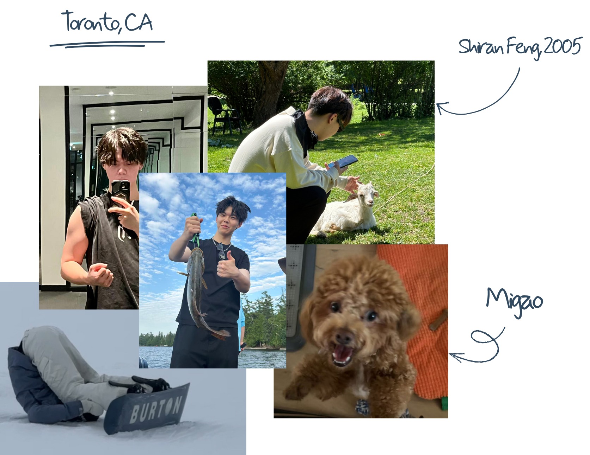

OCAD University
Sept 2023 — Apr 2027 (Expected)
Illustrator · Visual Storyteller
I'm currently completing an undergraduate program in Illustration, with a research-driven, iteration-based approach to visual narrative and character design.

Sept 2023 — Apr 2027 (Expected)
2025
Summer 2025
Summers 2023–2024
Currently preparing this portfolio for graduate program applications.